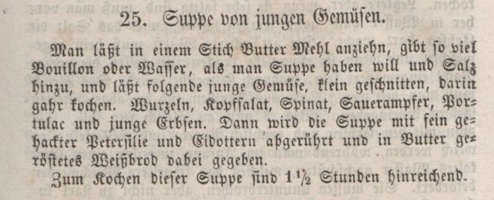
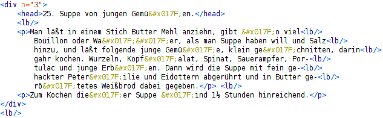

Wie entsteht eigentlich die Idee zu einer Master-Arbeit? Wie finden Professor und Student zusammen? Ist es von der Idee bis zur Abgabe eine Einbahnstraße, oder werden immer und immer wieder über neue Stolpersteine gestolpert, neue Inspirationen inspiriert, neue ... ? Selbstverständlich sind letztere Punkte der Fall - Ansonsten hätte man offensichtlich nichts dazugelernt! Dieser Blog verdeutlich dies und gibt darüber hinaus Einsichten in unsere Arbeitsweise; was u.A. die anderen Fragen mit abdeckt.
Ehrlicherweise muss ich gestehen, dass das kein echter Blog ist (auch wenn das eine gute Idee gewesen wäre, wie in wissenschaftliches Arbeiten im 21. Jahrhundert disskutiert). Hier sind unsere niedergeschriebenen Gedankengänge, die nachträglich in diesen Blog umgewandelt wurden. Im Allgemeinen kann ich das Niederschreiben von Gedankengängen jedem nur wärmstens empfehlen. Es hilft die Gedanken zu sortieren und auszupfeilen. Des Weiteren zeigt einem das Niederschreiben brutalst, wo man etwas noch nicht genau verstanden hat; nämlich genau da, wo man beim Schreiben stockt. Dies ist etwas sehr positives, da man so geradezu zum Nachdenken über die Schwierigkeiten gezwungen wird. Auch können andere dann die Gedanken und ggf. Schwierigkeiten lesen, nachvollziehen und einem beim Arbeiten unterstützen. So werden früh Irrewege abgekürzt, was die Zeit des Niederschreibens mehr als wieder einholt :)
Angefangen hat alles damit, dass mein betreuender Professor Herr Luttenberger Frau Davidis' Kochbuch geschenkt bekommen hat. Er hat dann natürlich angefangen, sich darüber Gedanken zu machen. Diese Gedanken hat er in einem Word-Dokument Tagebuch-ähnlich niedergeschrieben. Diese Einträge bilden quasi den Startschuss und daher fängt dieser Blog mit ihnen an (der unterste Beitrag dieses Bloges ist der Erste).
In der Vorlesung Web-Technologien hat Herr Luttenberger kurz das Paper vorgestellt, welches die westliche mit der asiatischen Küche vergleicht. Ich konnte mit meinem Koch-domänen-spezifischen Wissen glänzen, dass Muskatnuß und Muskatblüte zwei unterschiedliche Gewürze sind (s. hier). Nach der Vorlesung hat Herr Luttenberger mich dann angeworben, ob ich nicht Lust hätte als SHK die Reise mit Davidis's Kochbuch zu teilen. Wie hoffentlich an dieser Webseite ersichtlich ist, bin ich mit viel Herzensblut vorangestürmt. Doch diese Webseite ist natürlich viel mehr als ein kurzer 100m Sprint.
Zunächst habe ich mich also als SHK 3 Monate mit dem Kochbuch beschäftigt. Man könnte sagen, ich habe den Blog von Herrn Luttenberger damit übernommen. Ähnlich wie er, habe ich regelmäßig meine Gedankengänge und neuen Erkentnisse Tagebuch-ähnlich niedergeschrieben. Diese Einträge bilden somit den 2. Teil des Blogs.
Da viele Erkenntnisse der Form waren Das passt noch nicht wirklich, haben wir an die SHK-Tätigkeit diese Master-Arbeit drangehangen. Mittwochs gibt es bei Herrn Lutternberger immer ein Seminar, in dem einige Studenten ihre neuesten Erkenntise bezüglich ihrer Abschluss-Arbeiten vorstellen. Die PDFs meiner Präsentationen bilden den 3. Teil des Blogs. Da ich die Metapher eine Abschluss-Arbeit mit einer Reise zu vergleichen sehr schön finde, habe ich jeder Präsentation einen Titel gegeben, so wie jedes Kapitel eines guten Romans einen Titel hat. Vor jedem PDF gönne ich mir daher ein bis zwei Sätze, um die Assoziation mit dem Titel zu erläutern.
Abschließend nach diesem langen Vorwort noch alle Title meiner Präsentationen - sind diese nicht viel versprechend?
Anlässlich des diesjährigen gemeinsamen Abendessens der AG ComSys (ganz hervorragend von unserem Masterstudenten Dennis Sen und seiner Liebsten zubereitet) hat mein Mitarbeiter Jesper Zedlitz mir als dem Gastgeber ein Buch geschenkt. Wie es bei Jesper üblich ist: nicht irgendein Buch – kein bluttriefender Krimi, kein pistolenschwingender Agententhriller, kein gänsehäutiger Horrorschocker – nein, all das nicht. Sondern ein altes Buch. Genauer gesagt: ein altes Kochbuch. Ein Kochbuch aus dem Antiquariat.
Nun soll man sich ja, wenn Jesper einem etwas schenkt, immer auch etwas dabei denken. Altes Buch: Was könnte das bedeuten? Die Antwort zu finden, schien mir einfach: Herr Luttenberger, dieses Buch wollen wir einscannen, wir finden bestimmt jemanden, der es abtippt, und dann wollen wir es der interessierten Öffentlichkeit in Form einer digitalen Edition zur Verfügung stellen. Alte Dokumente zugänglich zu machen – ja, man kann wirklich sagen, dass das zu Jespers Leidenschaften gehört. Warum ein Kochbuch? Nun, die Antwort auf diese Frage zu finden, schien mir nur wirklich sehr einfach: Herr Luttenberger, beim nächsten Mal möchten Sie vielleicht ein Gericht nach einem Rezept aus diesem Buch kochen – wir kommen gerne!
Ich habe noch am gleichen Abend angefangen, in diesem Kochbuch zu lesen. Ehrlich gesagt: hard stuff! Für uns heutige ist "Rezept" eine Textsorte, die aus mindestens zwei Teilen besteht: der Zutatenliste und der Zubereitungsanleitung. Früher war das anders. Der unten gezeigte Auszug aus Henriette Davidis' "Praktischem Kochbuch für die gewöhnliche und feinere Küche" (das ist der Titel des Buchs, das Jesper mir geschenkt hat) belegt es: Zutatenliste und Zubereitungsanleitung sind in einem Absatz vermischt.
Ich habe mir gedacht: Wenn ich wirklich für das nächste gemeinsame Abendessen ein Gericht nach einem Rezept aus diesem Kochbuch kochen soll, dann muss ich das Originalrezept erst decodieren und in ein Rezept nach heutigen Gestaltungsregeln umschreiben. So wie es da aufgeschrieben ist, kann ich es nicht verwenden – diese "Suppe von jungen Gemüsen" würde mir nicht gelingen.
Am nächsten Tag habe ich eine E-Mail von Jesper bekommen: "Lieber Herr Luttenberger, hier habe ich eine TEI-kodierte Fassung des Kochbuchs (vermutlich eine andere Auflage/Ausgabe) gefunden: http://www.deutschestextarchiv.de/book/show/davidis_kochbuch_1849. Die digitale Edition dieses Kochbuchs, die Jesper mir per Buchgeschenk nahelegen wollte, ist vom Deutschen Textarchiv bei der Berlin-Brandenburgische Akademie der Wissenschaften schon erledigt worden, nämlich in Form einer "TEI-codierten Fassung" (s.u.). Sollte die Anpassung an heutige Gestaltungsregeln schon erledigt sein und bliebe also nur noch das Kochen … ?
Wenn ich die Frage so stelle, dann riechst Du, liebe Leserin, schon die Antwort: Nein – da ist noch was zu tun! Ich hole etwas aus und erläutere zunächst einmal, was "TEI-kodierte Fassung des Kochbuchs" bedeutet.
Zunächst einmal hat das Deutsche Textarchiv das Kochbuch "manuell durch Nicht-Muttersprachler im Double Keying-Verfahren erfass[en lassen]". Zwei Nicht-Muttersprachler haben also unabhängig voneinander den Text abgetippt; die abgetippten Texte wurden miteinander verglichen, und bei Unstimmigkeiten wurde eine Korrektur veranlasst. Das ist aber nur die eine Hälfte der Wahrheit. Beim Abtippen (oder auch danach) wird der zu erfassende Text mit TEI tags angereichert, und das ist es, was uns hier mehr interessiert. Für alles andere verweise ich auf die Seiten des Deutschen Textarchivs.
TEI bedeutet Text Encoding Initiative, und diese Initiative hat Guidelines zur Codierung von Texten vorgelegt, die mittlerweile (d.h. in der fünften Version) insgesamt 1853 Seiten umfassen. Kurz gesagt: Es geht um eine Sammlung von XML tags, mit denen man Texte unterschiedlicher Art auszeichnen kann. Dadurch werden die Texte zu strukturierten Texten, und diese können maschinell verarbeitet werden. Klingt wie die Einleitung zu meiner XML-Vorlesung. Weil das so schön ist, zitiere ich aus der Einleitung zu den Guidelines:
"In particular, [these guidelines] specify a set of markers (or tags) which may be inserted in the electronic representation of the text, in order to mark the text structure and other features of interest. Many, or most, computer programs depend on the presence of such explicit markers for their functionality, since without them a digitized text appears to be nothing but a sequence of undifferentiated bits. The success of the World Wide Web, for example, is partly a consequence of its use of such markup to indicate such features as headings and lists on individual pages, and to indicate links between pages. The process of inserting such explicit markers for implicit textual features is often called ‘markup’, or equivalently within this work ‘encoding’; the term ‘tagging’ is also used informally. We use the term encoding scheme or markup language to denote the complete set of rules associated with the use of markup in a given context; we use the term markup vocabulary for the specific set of markers or named distinctions employed by a given encoding scheme."
Wir schauen uns einfach einmal die getagte "Suppe von jungen Gemüsen" an:

Also, mal ehrlich: Besonders schön sieht das ja nicht aus. Da kann man ja beinahe die Frakturschrift leichter lesen als dieses XML …
Im nächsten Blogpost werden wir versuchen herauszufinden, was da passiert ist.